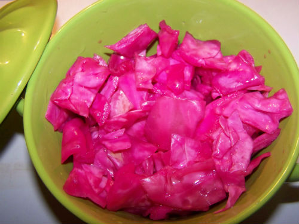

Капуста квашенная по-грузински

Ингредиенты:
Половинка Капусты
1 шт. Свекла
2 зуба Чеснок
1 шт. Жгучий перец (опционально)
3 шт Стебли сельдерея
1 литр Вода
2 ст.л. Соль
1 щепоть Сахара
Приготовление:
1. Режем капусту ломтиками.
2. Чеснок слайсами.
3. Сельдерей кубиками.
4. Свеклу пластинками, и делим их попалам.
5. Растворяем сахар и соль в воде.
6. Заливаем все, ждем 2 недели.